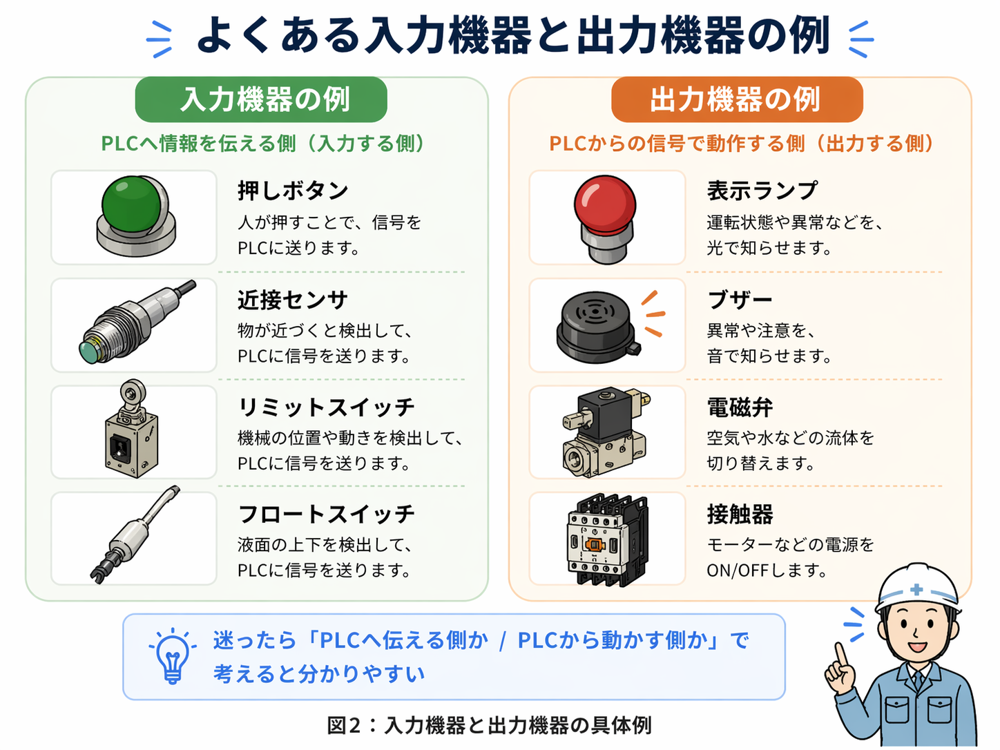

1. 先に結論
入力は「PLCに情報を伝える側」、出力は「PLCから動かす側」です。 押しボタンやセンサは入力、ランプや電磁弁、接触器などは出力に当たります。
迷った時は、「これはPLCへ伝えるものか、PLCから動かされるものか？」で考えると整理しやすいです。
入力は見る側、出力は動かす側
PLCは現場の状態を入力で受け取り、その条件に合わせて出力を動かします。 まずはこの流れを押さえると、ラダー図や配線図も追いやすくなります。

先輩入力と出力は、PLCから見た方向で考えると分かりやすいよ。PLCへ入ってくるのが入力、PLCから出ていくのが出力だね。

新人機器そのものだけで決めるより、PLCから見てどっち向きかで見るんですね。
2. 入力と出力の違いをざっくりイメージする
PLCは、現場の状態を「入力」として受け取り、その条件に合わせて「出力」を動かす機器です。 押しボタンを押す、センサが何かを検知する、といった情報が入力です。
その情報をもとに、ランプを点ける、電磁弁を動かす、接触器を入れる、といった動きが出力です。

まずは「PLCへ知らせる側」と「PLCから動く側」で分ける
入力はPLCへ状態を知らせる側、出力はPLCの判断で動く側です。 最初はこの分け方だけでも、現場の配線やラダー図がかなり見やすくなります。
3. よくある入力機器の例
入力機器は、今の状態をPLCへ知らせる役割を持っています。 PLCから動かされるというより、自分の状態を伝える側です。
| 機器の例 | 役割 | 現場でよく見る場面 | PLCでは |
|---|---|---|---|
| 押しボタン | 操作をPLCへ伝える | 起動・停止・リセットなど | 入力（X） |
| 近接センサ | 物を検知してPLCへ伝える | 位置検出・有無検出など | 入力（X） |
| リミットスイッチ | 機械の位置をPLCへ伝える | シリンダの端・扉の開閉など | 入力（X） |
| フロートスイッチ | 液面の状態をPLCへ伝える | 水位の上限・下限など | 入力（X） |
| 各種接点信号 | 外部機器の状態をPLCへ伝える | 異常信号・安全装置など | 入力（X） |
入力機器は「今こうなっています」を伝える
入力機器は、操作された、検知した、位置に来た、異常が出た、という状態をPLCへ知らせる役目です。
4. よくある出力機器の例
出力機器は、PLCからの信号で実際に動く側です。 現場では、光る、鳴る、切り替える、入切する、といった動きを担当します。

| 機器の例 | 役割 | 現場でよく見る場面 | PLCでは |
|---|---|---|---|
| 表示ランプ | 状態や異常を知らせる | 運転中・異常発生・完了表示など | 出力（Y） |
| ブザー | 音で知らせる | 異常警報・呼び出しなど | 出力（Y） |
| 電磁弁 | 空気や液体の流れを切り替える | シリンダ制御・エア制御など | 出力（Y） |
| 接触器 | モータや大きな負荷を入切する | モータ起動・停止など | 出力（Y） |
| 中継リレー | PLC出力を受けて別回路を動かす | 信号分岐・電圧切替など | 出力（Y） |
5. XとYの見方もここで一緒に覚えておくと楽です
三菱系のPLCでは、入力側をX、出力側をYで表すことが多いです。 ラダー図の中でも、Xは入力、Yは出力として見ると追いやすくなります。
- X0：起動ボタンの入力
- X1：停止ボタンの入力
- Y0：運転ランプや接触器の出力
- Y1：別の電磁弁や警報出力
Xは入力、Yは出力
実際の番地や構成は設備によって違いますが、Xは入力、Yは出力という基本だけでもかなり見やすくなります。
6. 現場で迷った時はこの見方をすると判断しやすいです
入力か出力か分からなくなった時は、難しく考えすぎず、次の順で見ると整理しやすいです。
1. PLCへ知らせる側か？
状態や操作を伝えるなら、入力の可能性が高いです。
2. PLCから動かされる側か？
光る、鳴る、切り替わる、入切されるなら、出力の可能性が高いです。
3. ラダー図ではXかYか？
三菱系ならXは入力、Yは出力として見ると分かりやすいです。
4. 実機で何をしているか？
操作・検知なら入力、動作・表示なら出力のことが多いです。
接触器や中継リレーは混ざりやすい
PLCからコイルを動かす対象として見るなら出力側です。 ただし補助接点信号をPLCへ戻している場合は、その信号側は入力として扱います。
7. 入力と出力でよくある疑問
Q. センサは入力ですか？
基本的には入力です。センサは状態を検知してPLCへ伝える役目です。
Q. ランプは入力ですか？
いいえ、基本的には出力です。PLCからの信号で点灯する側です。
Q. 接触器は入力と出力のどちらですか？
PLCからコイルを動かす対象として見るなら出力側です。 ただし補助接点信号をPLCへ戻している場合は、その信号側は入力として扱います。
8. まとめ
入力はPLCへ情報を伝える側、出力はPLCから動かされる側です。 押しボタンやセンサは入力、ランプや電磁弁、接触器などは出力として見ると整理しやすくなります。
- 入力は、PLCへ状態や操作を知らせる側
- 出力は、PLCの判断で実際に動く側
- Xは入力、Yは出力として見るとラダー図を追いやすい
- 迷ったら「PLCへ伝えるか、PLCから動かされるか」で考える
あわせて読みたい記事
入力と出力の違いが見えてきたら、PLCの全体像、センサ、ラダー図、自己保持回路へ進むと理解しやすいです。